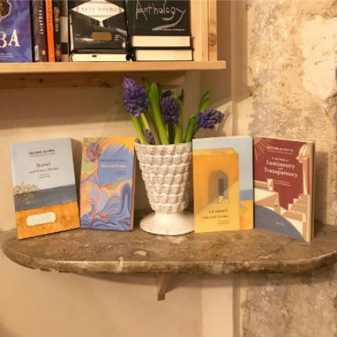
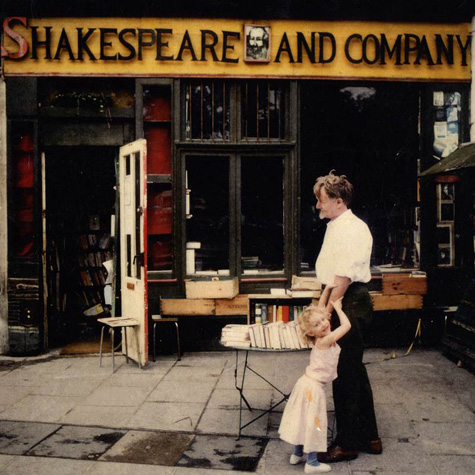
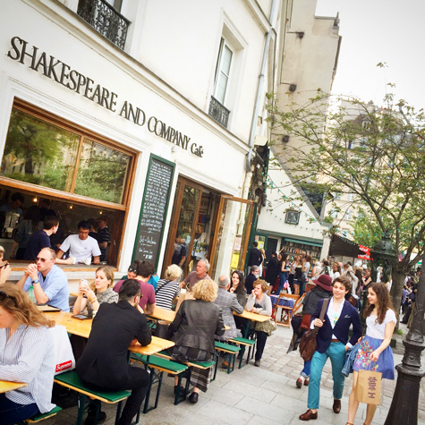
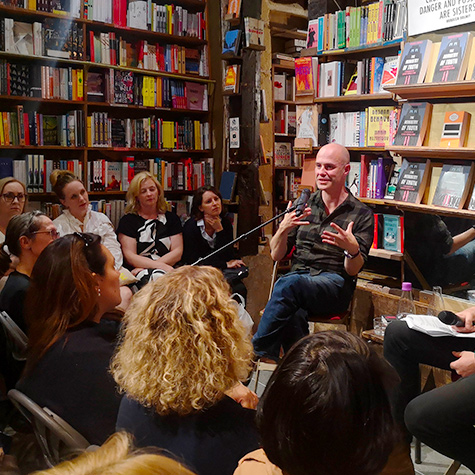
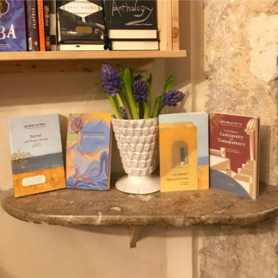
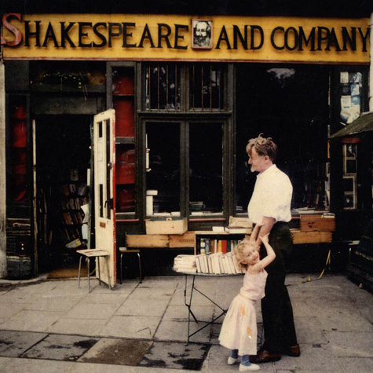
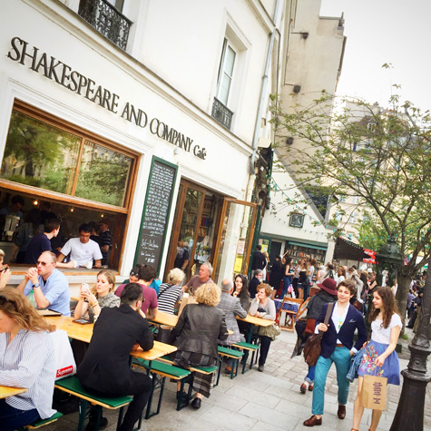
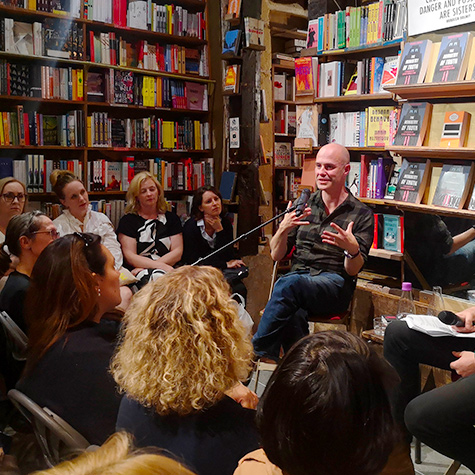

Shakespeare and Company
📍Paris, France
Paris, one of the cities where many poets or writers have dwelled in, houses the most famous bookstore in the world
–– Shakespeare and Company.
Addrress: 37 rue de la Bûcherie 75005 Paris, France
Email: news@shakespeareandcompany.com
Telephone: 0033(0)143254093
I visited the bookstore in the Winter in 2014. As a foreign-literature-major back then, Shakespeare and Company is the pilgrim you must take.
Cited from the website: Shakespeare and Company is an English-language bookshop in the heart of Paris, on the banks of the Seine, opposite Notre-Dame. Since opening in 1951, it’s been a meeting place for anglophone writers and readers, becoming a Left Bank literary institution.
Images extracted from https://shakespeareandcompany.com The first two photos are photographed by me.

 






